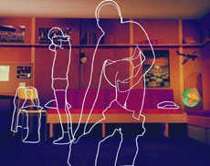

|
NEVER LIKE THE FIRST TIME! (Aldrig som första gången!)
Jonas Odell | Schweden 2006 | 15 Min.
Format: 35mm
Originalsprache: Schwedisch
Animationen: Per Helin, Stefan Ljungberg, Jonas Odell, Arvid Steen, Aron Hagerman, Riina Kütt, Audrone Brasiskyte, Neringa Rackyte, Rita Anskaitiene, Jessica Laurén
Schnitt: Jonas Odell
Ton: Anders Larsson/ALC
Musik: Krister Linder
Mit Mikael Brolin, Rebecca Haridi, Jenny Holmström, Johanna Karlsson, Fredrik Östling, Torbjörn Jäger, Hanna Eklöf
Produktion: Filmtecknarna F. Animation AB zusammen mit Nordic Film & TV Fund, Swedish Film Institute /Gila Bergqvist Ulfung
www.filmtecknarna.com
Preise (Auswahl): Goldener Bär für den besten Kurzfilm, Berlinale 2006 | Prix UIP - Bester Europäischer Kurzfilm, Cork 2006 | Grand Prix, Winterhur 2006 | Best Short Animation, San Francisco 2007
Aufzeichungen über das erste Mal: Vier Menschen erzählen von ihrer ersten Liebeserfahrung. Jonas Odell hat die dokumentarischen Interviews als Tonspur verwendet und dazu Animationen in vier ganz unterschiedlichen Stilen gefunden. Ob Nostalgie, Enttäuschung, Horror oder Magie ihre Erzählungen bestimmt: Es wird nie wieder so sein wie beim ersten Mal!
Jonas Odell, geb. 1962. Mitbegründer von Filmtecknarna, die auf die Produktion von Animationsfilmen spezialisiert ist. Odells Filme sind charakterisiert durch den Mix von Lebendaufnahmen mit verschiedenen Animationstechniken. Neben seinen Kurzfilmen, TV-Serien und Werbefilmen hat er sich vor allem durch seine Musikvideos einen Namen gemacht. "Never Like the First Time!" war auf über 80 Festivals eingeladen und hat rund 20 Preise gewonnen.
Films: Lögner/Lies 2008 | Never Like the First Time!" 2006 | Franz Ferdinand: Take me out 2004 | Family & Friends 2002 | Otto 1997 | Revolver 1993 | Exit 1989
zurück
|